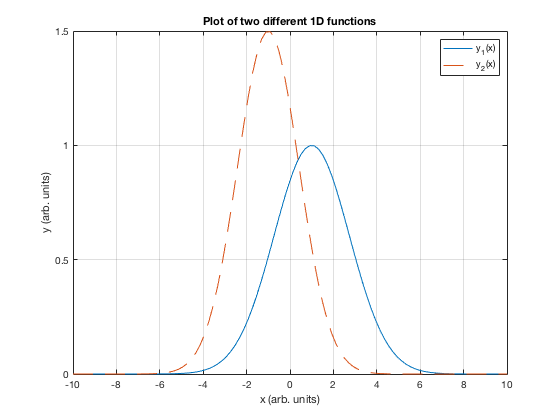
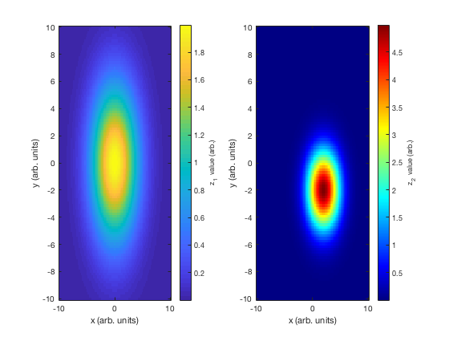
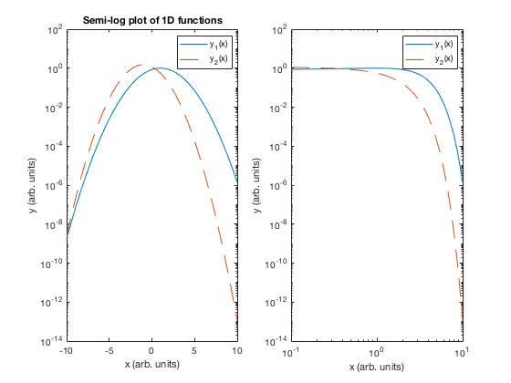
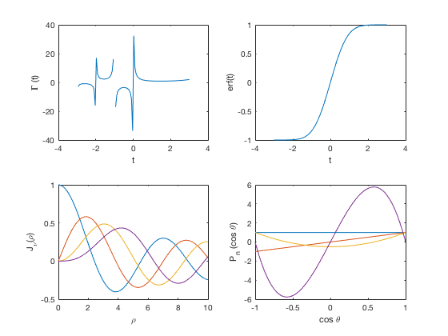

Contents
- Things illustrated during class
- Create some 1D and 2D data for plotting
- Plot various data
- Print the plots to files that can be embedded in word processors
- Set up, evaluation, and solution of linear systems of equations. Manipulation of matrices.
- Special functions, illustration of using greek letters in strings
- Demonstration of precision issues in matlab and formatted print statements (avoid subtracting number of vastly different magnitudes...)
% The purpose of this program is to illustrate examples of a wide swath of % common Matlab use cases, most of which will be useful at some point in the % semester. % %This script requires files containing the functions fun1D and fun2D.
Things illustrated during class
% installing matlab % arrays, vector operations, etc. % complex number manipulation, abs, angle, real, imaginary % random number generation: rand, randn, histograms % publishing matlab content
Create some 1D and 2D data for plotting
independent coordinates
x=linspace(-10,10,100); %100-point arrays for x and y y=linspace(-10,10,100); [X,Y]=meshgrid(x,y); %2D function evaluations require true 2D grid of points % function evaluations y1=fun1D(x,1,1,3); y2=fun1D(x,1.5,-1,2); Z1=fun2D(X,Y,2,0,0,3,4); Z2=fun2D(X,Y,5,2,-2,2,2);
Plot various data
1D data
figure(1); clf; %clear out the old figure (if applicable) plot(x,y1,'-',x,y2,'--'); grid on; %add a grid xlabel('x (arb. units)'); ylabel('y (arb. units)'); title('Plot of two different 1D functions') legend('y_1(x)','y_2(x)') % 2D data figure(2); clf; ax1=subplot(1,2,1); imagesc(x,y,Z1); %scaled image plots (recommended for 2D plots) axis xy; %rearrange plot with a non-inverted x-y axis xlabel('x (arb. units)'); ylabel('y (arb. units)'); c=colorbar; %save colorbar handle so you can add labels to it ylabel(c,'z_1 value (arb.)'); ax2=subplot(1,2,2); imagesc(x,y,Z2); axis xy; xlabel('x (arb. units)'); ylabel('y (arb. units)'); c=colorbar; colormap(ax2,jet(256)); %switch colormap to jet and use 256 different shades (default is usually 64) - only do this for the second set of axes in the figure ylabel(c,'z_2 value (arb.)'); % Logarithmic plotting example figure(3); clf; % semilog plot subplot(1,2,1); semilogy(x,y1,'-',x,y2,'--'); xlabel('x (arb. units)'); ylabel('y (arb. units)'); title('Semi-log plot of 1D functions') legend('y_1(x)','y_2(x)') %log-log plot subplot(1,2,2); inds=find(x>0); %find indices where x>0 loglog(x(inds),y1(inds),'-',x(inds),y2(inds),'--'); xlabel('x (arb. units)'); ylabel('y (arb. units)'); legend('y_1(x)','y_2(x)')  
Print the plots to files that can be embedded in word processors
figure(1); print('-depsc2','fig1.eps'); %print to postscript (vector graphics) figure(2); print('-dpng','fig2.png'); %png file (rasterized) figure(3); set(gcf,'PaperPosition',[0 0 11 5]); %adjust the aspect ratio of the printed figure to fit on 11x5 "sheet of paper" (prevents figure squeezing) print('-depsc2','fig3.eps');
Set up, evaluation, and solution of linear systems of equations. Manipulation of matrices.
% this matrix and vector represent the system of equations: % 1) x + 2y + 4z = 18 % 2) 2x + 12y - 2z = 9 % 3) 5x + 26y + 5z = 14 A=[1, 2, 4; ... %notice that the ellipses in matlab allows you to continue a line 2, 12,-2; ... 5, 26, 5]; %A(i,j) is the coefficient of the ith variable in the jth equation B=A'; %transpose of A b=[18; 9; 14]; %this is the column vector representing the RHS of the system % Some basic commands to display variables disp('A = '); disp(A); disp('b = '); disp(b); % Compute some matrix properties and print them disp('det(A) = '); disp(det(A)); disp('trace(A) = '); disp(trace(A)); disp('condition # of A = '); disp(cond(A)); disp('transpose(A) = '); disp(B); disp('Aii (diagonal elements of A) = '); disp(diag(A)); %matrix functions disp('A*B (matrix multiplication) = '); disp(A*B); disp('Aij*Bij (scalar multiplication) = '); disp(A.*B); disp('5*A (multiplication) = '); disp(5*A); disp('Solution (x) of the system A*x=b: '); disp('x = '); xvec=A\b; disp(xvec); disp('I (3x3 identity matrix) = '); disp(eye(3)); disp('A^{-1} (inverse of A) = ') disp(A\eye(3)); %this is preferred over inv(A) (see matlab documentation) %slicing and concatenation of array/matrices disp('2nd row of A = '); disp(A(2,:)); disp('2nd column of A = '); disp(A(:,2)); disp('flat list (column vector) of matrix elements of A: ') disp(A(:)); disp('[A|A] (horizontal concatenation of A with itself): ') disp(cat(2,A,A)); disp('Vertical concatenation of A with itself: ') disp(cat(1,A,A)); disp('diagonal matrix: '); a1=10:-1:1; %count backward a1=a1(:); %convert to column vector disp(diag(a1,0)); disp('LU decomposition of A (A=L*U): ') [L,U]=lu(A); disp('L = '); disp(L); disp('U = '); disp(U); disp('Eigenvalues of A = '); [psi,lambda]=eig(A); disp(lambda); disp('Eigenvectors of A = '); disp(psi(:,1)); disp(psi(:,2)); disp(psi(:,3));
A =
1 2 4
2 12 -2
5 26 5
b =
18
9
14
det(A) =
40.0000
trace(A) =
18
condition # of A =
116.9115
transpose(A) =
1 2 5
2 12 26
4 -2 5
Aii (diagonal elements of A) =
1
12
5
A*B (matrix multiplication) =
21 18 77
18 152 312
77 312 726
Aij*Bij (scalar multiplication) =
1 4 20
4 144 -52
20 -52 25
5*A (multiplication) =
5 10 20
10 60 -10
25 130 25
Solution (x) of the system A*x=b:
x =
53.3500
-8.8750
-4.4000
I (3x3 identity matrix) =
1 0 0
0 1 0
0 0 1
A^{-1} (inverse of A) =
2.8000 2.3500 -1.3000
-0.5000 -0.3750 0.2500
-0.2000 -0.4000 0.2000
2nd row of A =
2 12 -2
2nd column of A =
2
12
26
flat list (column vector) of matrix elements of A:
1
2
5
2
12
26
4
-2
5
[A|A] (horizontal concatenation of A with itself):
1 2 4 1 2 4
2 12 -2 2 12 -2
5 26 5 5 26 5
Vertical concatenation of A with itself:
1 2 4
2 12 -2
5 26 5
1 2 4
2 12 -2
5 26 5
diagonal matrix:
10 0 0 0 0 0 0 0 0 0
0 9 0 0 0 0 0 0 0 0
0 0 8 0 0 0 0 0 0 0
0 0 0 7 0 0 0 0 0 0
0 0 0 0 6 0 0 0 0 0
0 0 0 0 0 5 0 0 0 0
0 0 0 0 0 0 4 0 0 0
0 0 0 0 0 0 0 3 0 0
0 0 0 0 0 0 0 0 2 0
0 0 0 0 0 0 0 0 0 1
LU decomposition of A (A=L*U):
L =
0.2000 1.0000 0
0.4000 -0.5000 1.0000
1.0000 0 0
U =
5.0000 26.0000 5.0000
0 -3.2000 3.0000
0 0 -2.5000
Eigenvalues of A =
0.4090 + 0.0000i 0.0000 + 0.0000i 0.0000 + 0.0000i
0.0000 + 0.0000i 8.7955 + 4.5216i 0.0000 + 0.0000i
0.0000 + 0.0000i 0.0000 + 0.0000i 8.7955 - 4.5216i
Eigenvectors of A =
-0.9823
0.1791
0.0556
0.3740 - 0.1688i
0.0581 + 0.1874i
0.8906 + 0.0000i
0.3740 + 0.1688i
0.0581 - 0.1874i
0.8906 + 0.0000i
Special functions, illustration of using greek letters in strings
t=linspace(-3,3,100); %indep variable for gamma and erf rho=linspace(0,10,100); %radial independent variable costh=linspace(-1,1,100); %cos(theta) variable figure(4); subplot(2,2,1); plot(t,gamma(t)); %gamma function xlabel('t'); ylabel('\Gamma (t)'); subplot(2,2,2); plot(t,erf(t)); %error function xlabel('t'); ylabel('erf(t)'); subplot(2,2,3); plot(rho,besselj(0,rho),rho,besselj(1,rho),rho,besselj(2,rho),rho,besselj(3,rho)) %first arg to bessel function is order, second is indep variable xlabel('\rho'); ylabel('J_\nu(\rho)'); %associated legendre function P0=legendre(0,costh); P1data=legendre(1,costh); P1=P1data(1,:); %pick the m=0 associated legendre function which is an ordinatry legendre polynomial P2data=legendre(2,costh); P2=P2data(1,:); P3data=legendre(3,costh); P3=P3data(3,:); subplot(2,2,4); plot(costh,P0,costh,P1,costh,P2,costh,P3); xlabel('cos \theta'); ylabel('P_n (cos \theta)');
Demonstration of precision issues in matlab and formatted print statements (avoid subtracting number of vastly different magnitudes...)
epssingle=eps(single(1.0)); %single precision smallest interval from number 1.0 disp('1 (single precision): ') fprintf('%32.31f \n',single(1.0)); disp('1+eps (single precision): '); fprintf('%32.31f \n',single(1.0)+epssingle); disp('1+eps/2 (single precision): '); fprintf('%32.31f \n\n',single(1.0)+epssingle/2); disp('1 (double precision): ') fprintf('%32.31f \n',double(1.0)); disp('1+double(eps) (single precision eps): '); fprintf('%32.31f \n',double(1.0)+double(epssingle)); disp('1+double(eps)/2.0 (single precision eps): '); fprintf('%32.31f \n',double(1.0)+double(epssingle)/2);
1 (single precision): 1.0000000000000000000000000000000 1+eps (single precision): 1.0000001192092895507812500000000 1+eps/2 (single precision): 1.0000000000000000000000000000000 1 (double precision): 1.0000000000000000000000000000000 1+double(eps) (single precision eps): 1.0000001192092895507812500000000 1+double(eps)/2.0 (single precision eps): 1.0000000596046447753906250000000